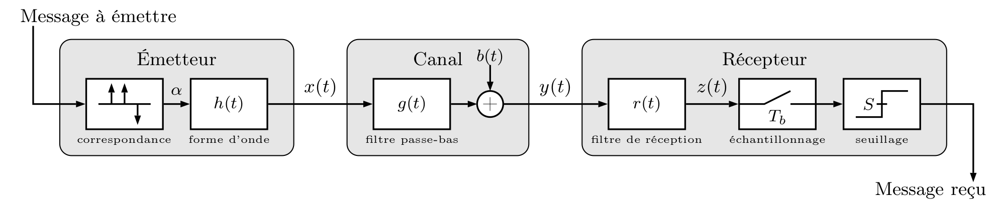

Travaux pratiques
Contents
Travaux pratiques#
Note
Dans la réalité, les signaux qui circulent sur le canal sont analogiques car le canal de communication est physique. Comme la chaîne de communications est ici simulée, l’ordinateur traite en fait des signaux numériques ! Il sera donc parfois nécessaire de fixer une fréquence d’échantillonnage qui n’a aucune interprétation physique…
Modules Python
Les TP nécessitent d’utiliser les modules classiques numpy, scipy, matplotlib, mais également comnumfip à télécharger et installer dans votre dossier de travail.
Étude de quelques modulations numériques#
L’objectif de cet exercice est d’implémenter et de comparer quelques modulations numériques :
NRZ (non-return-to-zero) binaire ;
Manchester ;
AMI (bipolar alternate mark inversion) ;
BPSK (binary phase-shift keying) ;
16-QAM (quadrature amplitude modulation).
Ces modulations sont étudiées et comparées à la fois dans le domaine temporel et dans le domaine fréquentiel.
Créez une séquence binaire aléatoire \(x_2\) de \(N\) bits (
comnumfip.randmary) et convertissez-la en séquence hexadécimale \(x_{16}\) (comnumfip.bin2mary) : vous disposez donc du même message disponible sous deux représentations différentes. Affichez-les avecprint.Appliquez les modulations
comnumfip.mod_a,comnumfip.mod_b,comnumfip.mod_c,comnumfip.mod_dsur la séquence binaire, etcomnumfip.mod_esur la séquence hexadécimale. Identifiez chacune de ces modulations.L’analyse spectrale des modulations peut être effectuée à l’aide de la densité spectrale de puissance, qui est le carré du module de la transformée de Fourier. En choisissant un message suffisamment long (\(N\) grand), représentez la densité spectrale de puissance de chaque modulation en échelle décimale en utilisant la méthode du périodogramme (
scipy.signal.periodogram, en fixant la fréquence d’échantillonnage égale à \(100/d\) où \(d\) est la durée d’un bit).Identifiez les modulations en bande de base et les modulations sur porteuse.
Comparez les codes en termes de largeur de bande, de simplicité de mise en œuvre, de robustesse au bruit, de synchronisation du récepteur,
d’inversion de la polarité et de détection d’interruption de la transmission.
D’après vos conclusions, quel type de modulation est le plus adapté aux communications suivantes ?
bus informatique (I2C, SATA…) ou de terrain (ASI, Modbus…) ;
liaison Wi-Fi ;
périphérique USB et ordinateur ;
téléphone mobile et antenne relais.
Transmission en bande de base sur un canal idéal#
Le principe d’une transmission en bande de base est représenté ci-dessous :
{kind=link}
Donnez l’expression du signal reçu \(y(t)\) en fonction du signal émis \(x(t)\) et des caractéristiques du canal.
Simulez la transmission d’un message codé en NRZ binaire (
comnumfip.randmary,comnumfip.mod_d,comnumfip.channel). On rappelle qu’on considère le canal idéal, donc que sa largeur de bande est infinie (numpy.inf). Observez le signal en entrée du détecteur pour différents niveaux de bruit.Dans un premier temps, on ne tient pas compte du filtre de réception : \(r(t) = \delta(t)\). Échantillonnez et seuillez le signal \(z(t)=y(t)\) (
comnumfip.sample_and_threshold) pour retrouver, tous les \(d\), les symboles \(\alpha_k\) émis.Dans un deuxième temps, appliquez le filtre de réception. Le filtre adapté peut s’implémenter à l’aide d’une corrélation, mais on peut montrer qu’il peut également s’écrire comme une convolution en utilisant
numpy.convolve(choisissezmode="same"pour conserver des signaux de même taille). Effectuez le seuillage et l’échantillonnage comme dans la question précédente.Calculez les taux d’erreurs obtenus avec et sans filtre de détection. Comment varie la qualité de la détection en fonction du niveau de bruit ?
Transmission en bande de base sur un canal à bande limitée#
Cette fois, on suppose le canal sans bruit mais à bande limitée. On peut alors être en présence d’IES lorsque les valeurs du signal \(z(t)\) aux instants d’échantillonnage dépendent de plusieurs symboles \(\alpha_k\). La détection est alors perturbée même s’il n’y a pas de bruit.
Simulez l’émission d’un message codé en NRZ binaire. Observez le signal en entrée du récepteur pour différentes fréquences de coupure du canal.
Tracez le diagramme de l’œil (
comnumfip.eyediag) de \(y(t)\) : que se passe-t-il lorsque la bande passante du canal varie ?Lorsque la bande passante du canal est trop faible, la forme d’onde rectangulaire n’est pas adaptée. Il est préférable d’utiliser une forme d’onde en racine de cosinus surélevé (
comnumfip.mod_rrc). Simulez la transmission du message avec cette nouvelle forme d’onde, notamment en observant le diagramme de l’œil pour plusieurs valeurs du facteur de retombée \(a\). L’impulsion en racine de cosinus surélevée est obtenue avec la fonctioncomnumfip.rrc.Simulez l’opération de détection en comparant les deux formes d’onde.